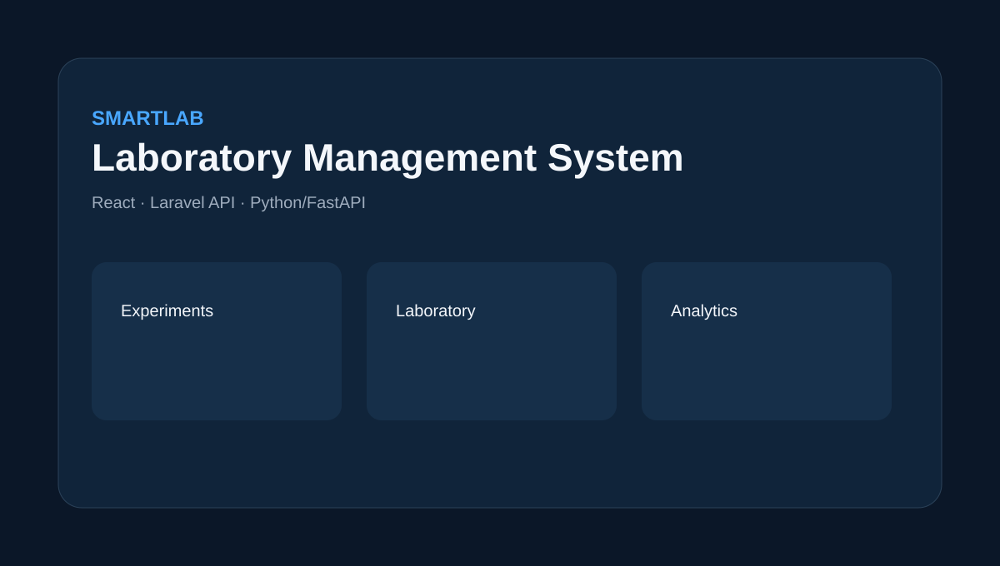

Full-Stack Web Development
End-to-end web applications with responsive interfaces, application logic, authentication, APIs and persistent data.
Full-Stack Software Engineering
FULL-STACK SOFTWARE ENGINEER
I’m Yasin Muhammed Tukur, a Computer Science graduate and PGD student at Ahmadu Bello University, Zaria. I build full-stack web applications, RESTful APIs and data-driven platforms with Laravel, PHP, JavaScript, React and modern relational databases.

01 / About
I design and build software across the application stack, with particular strength in Laravel/PHP APIs, relational databases, authentication and workflow-heavy systems.
My projects span education, academic integrity, laboratory operations, event technology, beneficiary management and assessment systems. I work from requirements through architecture, implementation, integration, testing and deployment.
My engineering approach emphasises clear application structure, role-scoped access, reliable data flow, maintainable code and interfaces that make complex workflows easier to operate.
02 / Services
End-to-end web applications with responsive interfaces, application logic, authentication, APIs and persistent data.
RESTful backends, role-based access, validation, services, database workflows and integrations for maintainable applications.
Structured relational data models and workflow-driven systems for education, administration, reporting and operational teams.
Payment, microservice and frontend integrations plus practical deployment workflows using modern hosting platforms.
Learning, project management, examination and academic-integrity systems designed around real institutional workflows.
Feature development, API integration, debugging, refactoring, security hardening and deployment support for existing systems.
03 / Experience
Engineered Laravel/PostgreSQL API services for an AI-powered learning platform and coordinated data flow between the React frontend and Python FastAPI experiment services.
Converted interface designs into responsive web pages using HTML5, CSS3, JavaScript and Bootstrap, integrated application flows and resolved launch issues.
Built JavaScript and Bootstrap components for a skill-building platform and contributed to usability and performance improvements.
Supported network maintenance, software troubleshooting and wireless setup activities in an institutional computing environment.
04 / Featured projects

Laboratory management / experiment workflowSmart laboratory platform combining a React frontend, Laravel API and Python FastAPI experiment services. The system brings laboratory workflows, experiment support and computational services into one application.
 Academic integrity / similarity analysis
Academic integrity / similarity analysisA Laravel platform for document integrity analysis and institutional review. Its analysis pipeline supports text extraction, shingling, MinHash fingerprints, persistent LSH indexing and similarity evidence for human academic assessment.
 Project workflow / supervision / defense
Project workflow / supervision / defenseLaravel 12 platform that digitises student project supervision and defence workflows with role-scoped access, private files, similarity-analysis authorization, scheduling, notifications and audit logging.
 Ticket purchase / QR ticket / check-in
Ticket purchase / QR ticket / check-inFull-stack event platform covering discovery, ticket inventory, authenticated ordering, Paystack checkout, server-side payment verification, digital QR tickets, organizer analytics, venue check-in and administrator controls.
 Offline learning / courses / sync
Offline learning / courses / syncHybrid learning MVP combining a Laravel REST API with React/Tailwind, SQLite persistence, Sanctum authentication and IndexedDB offline storage for learning, assessment, progress and synchronisation workflows.
 Beneficiary management / impact reporting
Beneficiary management / impact reportingCentralised beneficiary and impact-management platform connecting programmes, interventions, enrolments, assessments, impact indicators and reporting workflows.
 Exam dashboard / timed assessment / results
Exam dashboard / timed assessment / resultsLaravel-based computer-based testing platform supporting Admin, Teacher and Student roles, exam scheduling, question banks, timed assessments, automatic submission, result reporting and controlled retakes.
05 / Technical stack
06 / Education & certifications
Ahmadu Bello University, Zaria
Advanced study supporting software engineering practice, with work across database systems, cybersecurity, data structures, computer architecture and related computing disciplines.Ahmadu Bello University, Zaria
Academic foundation in software development, algorithms, database systems, systems analysis, networking and core computer science principles.Institute of Computing & ICT, Ahmadu Bello University, Zaria
Practical foundation in programming, computer systems, databases, networking and information technology.Professional certifications
Professional training/certification focused on Laravel application development and framework practices.
Professional training/certification covering PHP programming and web application development.
Professional training/certification covering modern React frontend development.
Professional training/certification covering cloud and application infrastructure concepts.
Professional training/certification related to database design, management and data handling.
Professional training/certification covering networking fundamentals and cybersecurity practices.
07 / Contact
Available for full-stack development, Laravel/API engineering, database systems, workflow platforms and software improvement projects.